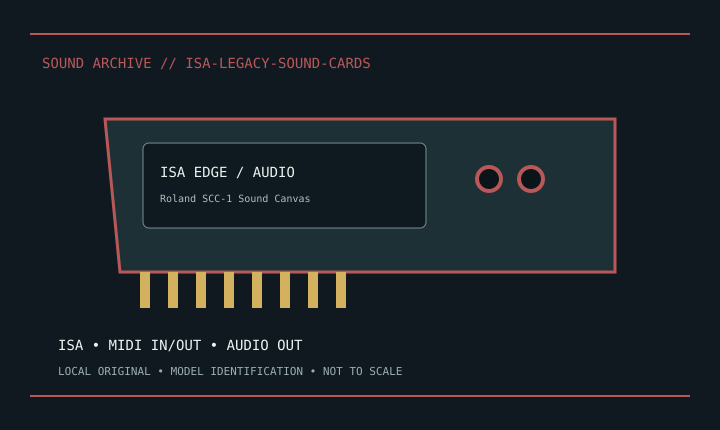

[ INDIVIDUAL MODEL // SOUND HARDWARE ]
Roland SCC-1 Sound Canvas
ISA MIDI interface and onboard multitimbral Sound Canvas synthesizer; MIDI input/output and analog audio out. This is SCC-1, not the external SC-55/SCC-1A.

Model-specific specifications
| Exact model / scope | Roland SCC-1 Sound Canvas. Preserve SCC-1-specific driver/MIDI configuration and board revision. Legacy host/software compatibility is expected; no PCM capture function is claimed. |
|---|---|
| Bus / host | ISA; use period drivers and compatible legacy host; modern OS support is not implied. |
| Documented functions / connectors | ISA MIDI interface and onboard multitimbral Sound Canvas synthesizer; MIDI input/output and analog audio out. This is SCC-1, not the external SC-55/SCC-1A. |
| Conversion / formats | Model-specific digital format/rates are stated only where identified in the manufacturer documentation. |
| Drivers / OS | Use the linked model-specific manufacturer support/manual page. Driver and supported OS availability depends on release; no undocumented OS compatibility is asserted. |
| Power / microphone | No +48 V phantom input documented for these legacy card-level microphone/audio paths. |
Compatibility & preservation
Preserve SCC-1-specific driver/MIDI configuration and board revision. Legacy host/software compatibility is expected; no PCM capture function is claimed.
- Photograph model/revision, connectors and included accessories before service.
- Retain the matching manual, driver/firmware and known-working host/routing configuration.
- Follow documented signal levels, connector pinout and power requirements; physical fit alone is not compatibility.
Manufacturer sources
- Manufacturer product information — Roland SCC-1 Sound CanvasProduct/model source; match the exact revision and board.
- Manufacturer support and documentationOfficial model documentation, drivers and OS compatibility information.